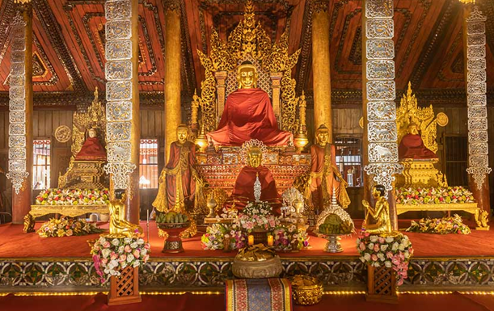
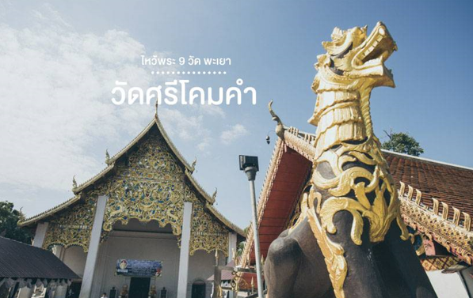
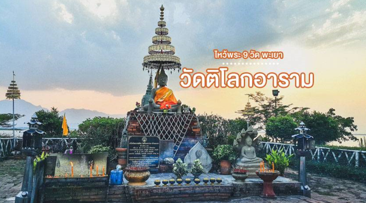
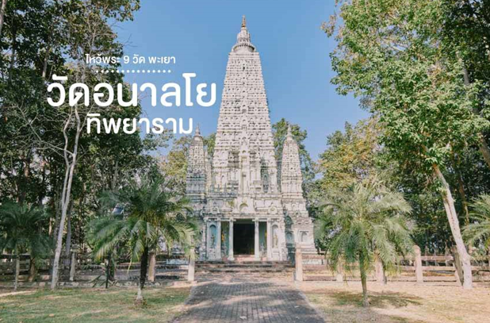
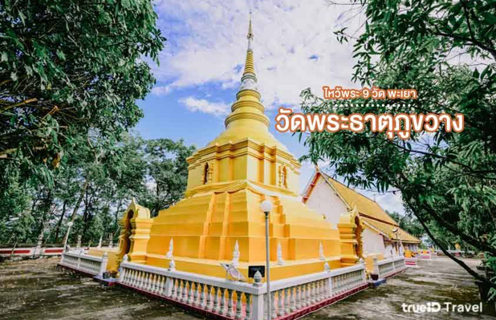
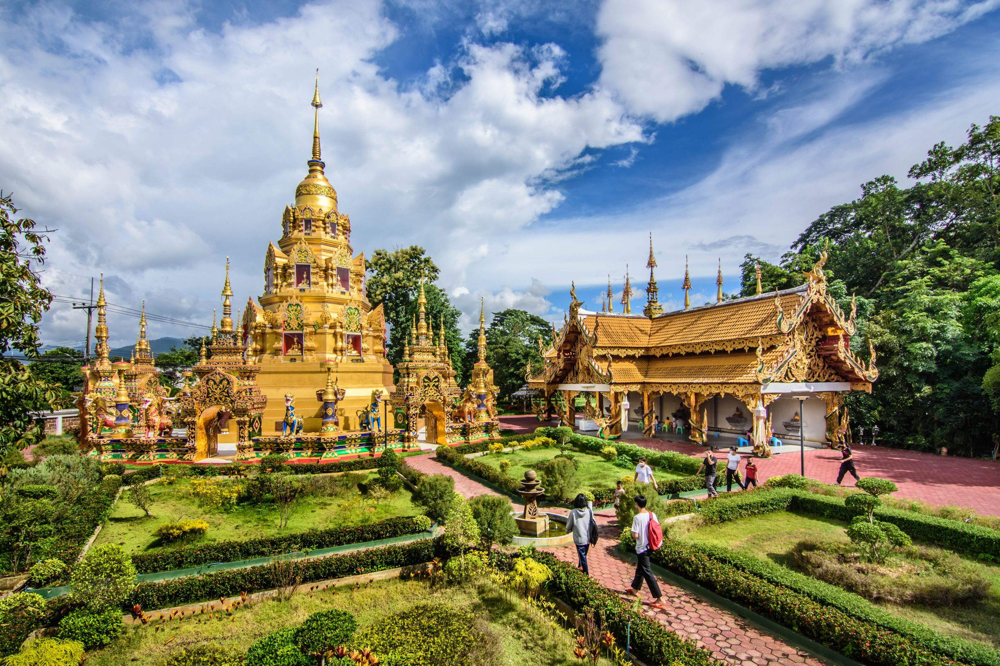
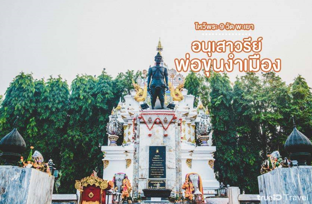

1. วัดพระธาตุจอมทอง
เ วัดพระธาตุจอมทอง ตั้งอยู่ใกล้ๆ กับกว๊านพะเยา ห่างจากตัวเมืองพะเยาเพียง 3 กิโลเมตรเท่านั้น บริเวณรอบๆ วัด จะเป็นป่าไม้ มีสวนรุกขชาติ และยังเป็นจุดชมวิวที่สามารถมองเห็นวิวของเมืองพะเยา และกว๊านพะเยาได้อย่างสวยงามชัดเจนเลยด้วยค่ะ ภายในวัดก็จะมีพระธาตุจอมทอง เป็นเจดีย์ทรงล้านนาที่สูงกว่า 30 เมตร ตั้งสง่าสีเหลืองทองอร่ามงดงาม ชาวบ้านนิยมมากราบไหว้ขอพรกันค่ะ บอกเลยว่าห้ามพลาดไปไหว้พระขอพรกันเลย

2.วัดนันตาราม
วัดนันตาราม เป็นวัดที่มีวิหารงดงามในแบบศิลปะไทยใหญ่ ซึ่งตัววิหารนี้ถูกสร้างด้วยไม้สักทั้งหลักตกแต่งลวดลายและฉลุไม้อย่างสวยงามมาก รวมถึงภายในวัดยังมี พิพิธภัณฑ์ธนบัตรเก่า ผ้าลายโบราณ และเครื่องใช้โบราณต่างๆ รวมถึง ภาพวาดโบราณ เกี่ยวกับการเทศน์มหาชาติในแต่ละตอนอีกด้วยค่ะ แต่ไฮไลท์ที่น่าสนใจอีกอย่างของที่นี่ก็คือ ธรรมาสน์สีทองเหลืองอร่ามสวยงาม ที่ทำจำลองมาจากราชบัลลังก์ของพม่าค่ะ สวยงามและน่าประทับใจขนาดนี้ อย่าลืมไปแวะกราบไหว้ขอพรกันนะคะ

พิกัด : วัดนันตาราม3.วัดศรีโคมคำ
อีกหนึ่งวัดที่พลาดไม่ได้เมื่อมาเที่ยว พะเยา ก็คือ วัดศรีโคมคำ หรืออีกชื่อหนึ่ง วัดพระเจ้าตนหลวง ซึ่งเป็นวัดเก่าแก่ และเป็นที่เคารพนับถือของชาวพะเยา มีไฮไลท์อยู่ที่ พระพุทธรูปองค์ที่ใหญ่ที่สุดของล้านนาไทย นั่นก็คือ พระเจ้าองค์หลวง ที่เรียกว่าเป็นองค์พระคู่บ้านคู่เมืองของจังหวัดพะเยา และอาณาจักรล้านนาเลยค่ะ โดยในช่วงเดือนพฤษภาคมของทุกปี จะมีงานประเพณีนมัสการพระเจ้าตนหลวงเดือนแปดเป็ง ซึ่งมีกิจกรรมให้นักท่องเที่ยวได้สนุกกัน ใครจะมาช่วงนี้ขอบอกเลยว่าห้ามพลาดเด็ดขาดค่ะ

พิกัด :วัดพระธาตุดอยคำ4. วัดติโลกอาราม
วัดติโลกอาราม เป็นอีกวัดของเมืองพะเยาที่น่าสนใจมากๆ เลยค่ะ เพราะเป็นวัดร้างที่จมอยู่ใต้น้ำในกว๊านพะเยานั่นเอง ซึ่งเมื่อก่อนเป็นเนินสันธาตุท้ายหมู่บ้านร่องไฮ จนต่อมาถูกน้ำกัดเซาะและได้พังทลายลงเป็นกองอิฐอยู่ใต้น้ำ ไฮไลท์จะอยู่ตรงที่เราจะต้องนั่งเรือเพื่อจะเข้าไปถึงตัววัด ซึ่งในระหว่างทางนั้น ก็สวยงามมากอย่าบอกใครเลย มองไปทางไหนก็เห็นกว๊านพะเยา เรียกได้ว่าวัดติโลกอารามเป็นวัดกลางน้ำที่สวยงามที่สุดแห่งหนึ่งของประเทศไทยเลยก็ว่าได้ค่ะ

พิกัด : วัดติโลกอาราม5. วัดอนาลโยทิพยาราม
วัดอนาลโยทิพยาราม เป็นวัดที่มีชื่อเสียงอีกแห่งหนึ่งของ จังหวัดพะเยา เลยค่ะ โดยที่นี่จะมีพระพุทธรูปศิลปะสุโขทัยที่มีลักษณะงดงามมาก และพระพุทธรูปปางต่างๆ อีกมากมายหลายองค์ ทั้ง พระพุทธไสยาสน์ พระพุทธรูปปางลีลา พระพุทธรูปปางนาคปรก ซึ่งทุกองค์นั้น ผ่านการสร้างสรรค์อย่างประณีตสวยงามอย่างมากเลยทีเดียว อีกทั้งมี องค์รัตนเจดีย์ ที่สร้างตามศิลปะแบบอินเดียพุทธคยา เก๋งจีน ที่ประดิษฐานเจ้าแม่กวนอิม หอพระแก้วมรกตจำลอง ทำด้วยทองคำ พระบุษราคัม พระเงิน พระทอง และพระนาค ให้ได้ไหว้ขอพรกันอีกด้วยค่ะ

พิกัด : วัดอนาลโยทิพยาราม6.วัดพระธาตุภูขวาง
วัดพระธาตุภูขวาง ตั้งอยู่ ตำบลห้วยแก้ว อำเภอภูกามยาว จังหวัดพะเยา เป็นวัดพระธาตุที่ว่ากันว่ามีตำนานอันเก่าแก่มาอย่างยาวนานเลยค่ะ เลยทำให้เป็นที่เคารพนับถือของประชาชนชาวพะเยาในพื้นที่เป็นอย่างมาก โดยในทุกๆ ปี วันขึ้น 15 ค่ำ เดือน 4 ตรง หรือ วันมาฆบูชา นั้น จะมี ประเพณีสรงน้ำพระธาตุภูขวาง ซึ่งประชาชนก็จะนำขมิ้นส้มป่อยมาสรงพระธาตุเพื่อความเป็นสิริมงคลกันค่ะ

พิกัด : วัดพระธาตุภูขวาง7.วัดพระนั่งดิน
วัดพระนั่งดิน เป็นวัดที่มีองค์พระประธานเก่าแก่ ประดิษฐานอยู่ นั่นก็คือ “พระเจ้านั่งดิน” ซึ่งมีความพิเศษตรงที่ว่าองค์พระประธานนั้นจะไม่มีฐานรองรับเหมือนกับพระประธานองค์อื่นๆ เป็นหนึ่งในสิ่งศักดิ์สิทธิ์คู่บ้านคู่เมืองพะเยา ที่มีตำนานที่น่าอัศจรรย์นั่นเองค่ะ และเคยมีมีผู้เฒ่าผู้แก่เล่าว่า มีชาวบ้านเคยสร้างฐานรองรับ แล้วอัญเชิญพระเจ้านั่งดินขึ้นประทับ แต่ก็เกิดเหตุประหลาดขึ้น ฟ้าผ่าลงมาที่อุโบสถถึง 3 ครั้งด้วยกัน จึงอาราธนาลงมาประดิษฐานบนพื้นดินดังเดิมเหมือนทุกวันนี้ค่ะ

พิกัด : วัดพระนั่งดิน8.วัดเชียงหมั้น
วัดเชียงหมั้น ตั้งอยู่ที่ อำเภอภูกามยาว จังหวัดพะเยา มีประวัติเล่าไว้ว่าวัดนี้ ได้ก่อตั้งก่อนที่ขุนจอมธรรมจะเสด็จมาสู่เมืองภูกามยาว (พะเยา) เมื่อประมาณพุทธศักราช 16000 นั่นเองค่ะ ในทุกๆ ปีนั้น ก็จะมี ประเพณีตามก๋วยสลาก ประเพณีแห่ไม้ค้ำ (ไม้ค้ำ ต้นโพธิ์) ประเพณีสรงน้ำพระธาตุ ประเพณีสงกรานต์ ที่จัดอยู่ภายในวัดแห่งนี้ขึ้นเป็นประจำนั่นเองค่ะ
9.อนุเสาวรีย์พ่อขุนงำเมือง
อนุสาวรีย์พ่อขุนงำเมือง เป็นสถานที่ศักดิ์สิทธิ์ที่นักท่องเที่ยวและชาวพะเยา นิยมมากราบไหว้ขอพรเพื่อความเป็นสิริมงคลกันค่ะ เพราะ พ่อขุนงำเมือง นั้นเป็นกษัตริย์ที่ปกครองเมืองภูกามยาวเมื่อสมัยก่อน และยังเป็นกษัตริย์ผู้ทรงอิทธิฤทธิ์มากในสมัยนั้นอีกด้วย หากใครมาเที่ยว จังหวัดพะเยา ก็อย่าลืมมาแวะกราบไหว้ขอพรกันที่นี่ด้วยนะคะ

พิกัด : อนุเสาวรีย์พ่อขุนงำเมือง